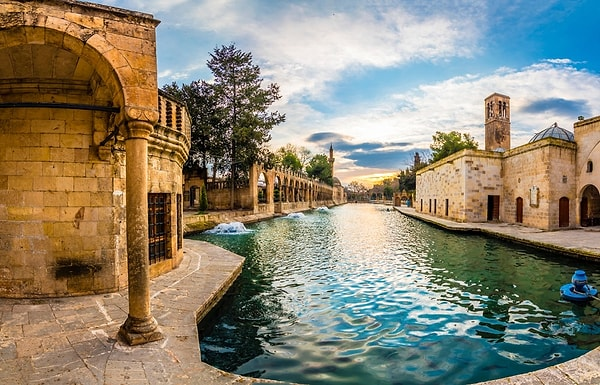

Balıklıgöl

Şanlıurfa'nın kutsal kabul edilen Balıklıgöl, sazan balıklarıyla ünlü olup, Hazreti İbrahim’in doğduğuna inanılan mağarayı da içinde barındırır.
Göbekli Tepe


Dünyanın bilinen en eski tapınak kompleksi olan Göbekli Tepe, MÖ 9600'lere tarihlenen taş yapılarıyla insanlık tarihine ışık tutmaktadır.